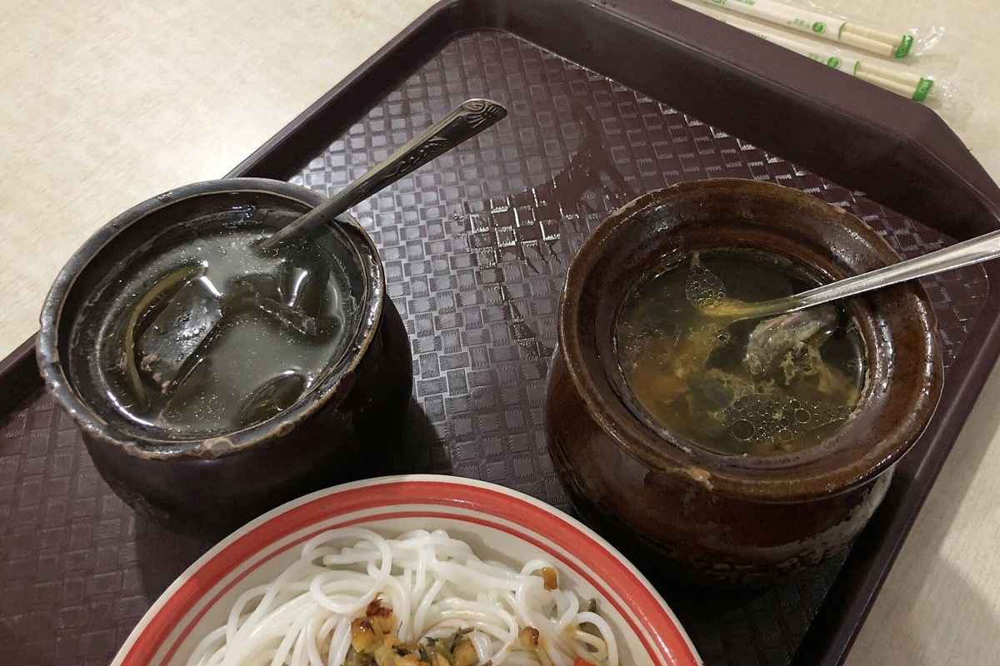
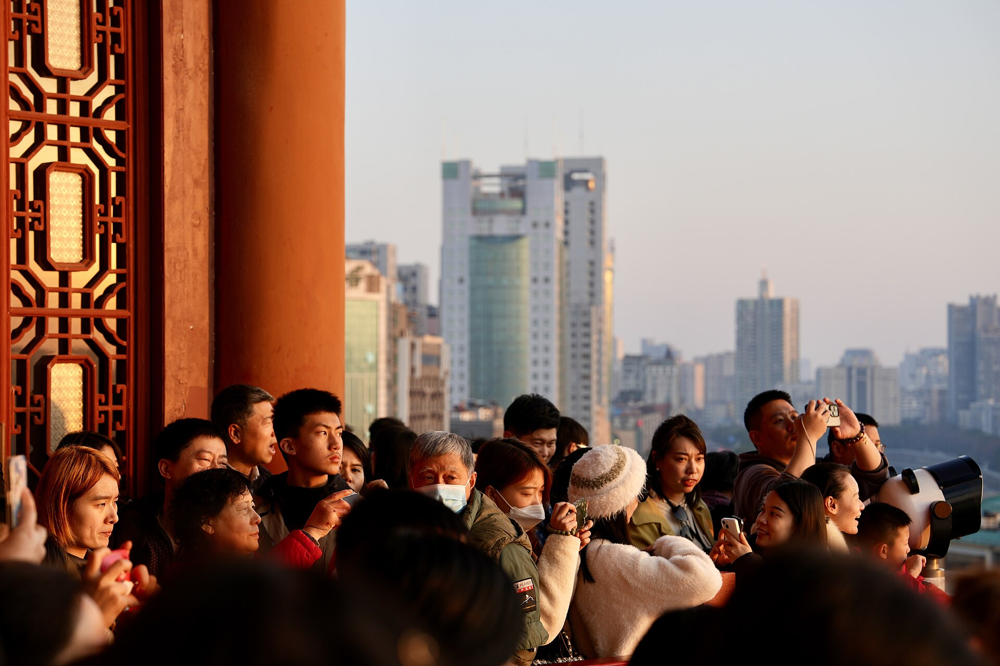
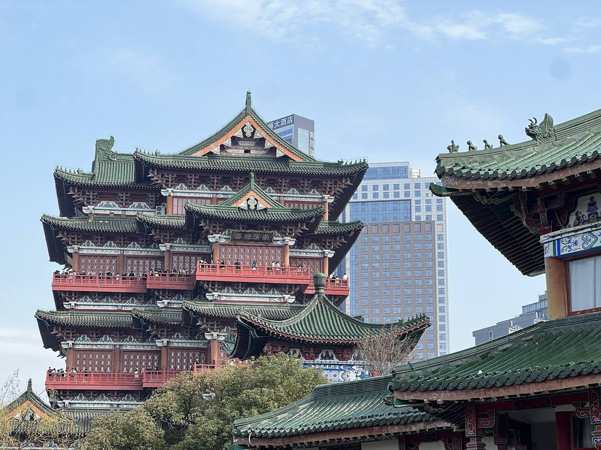
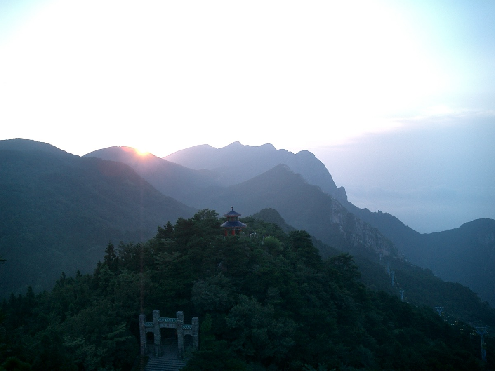
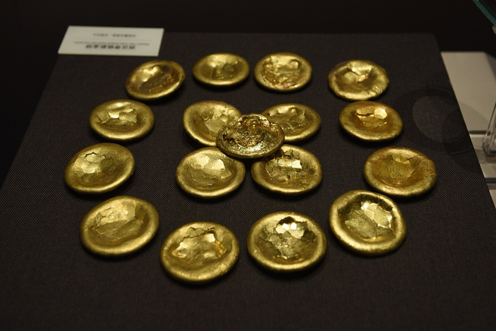
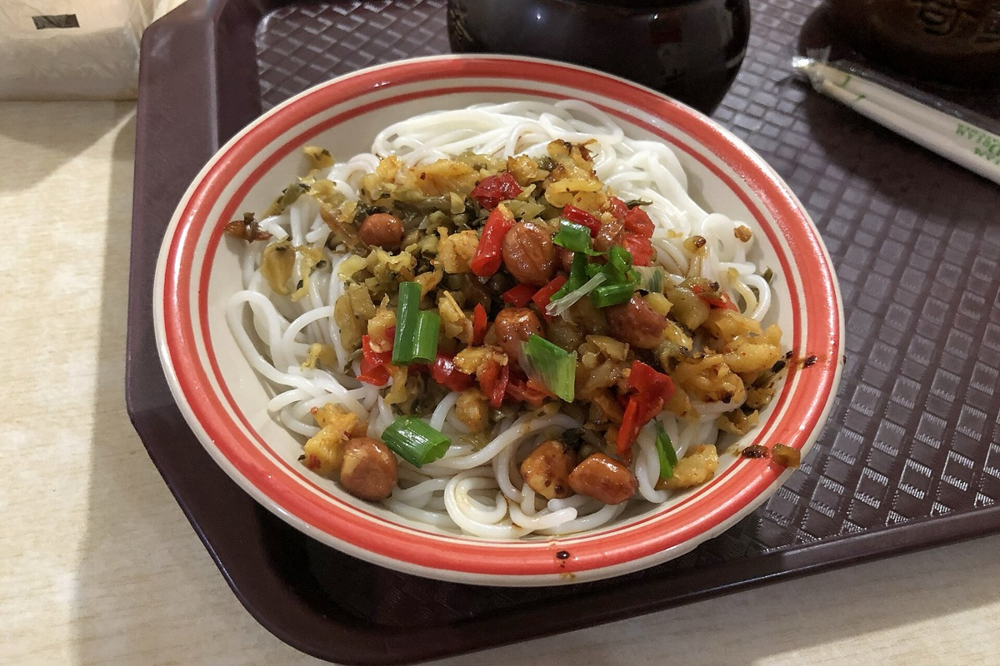
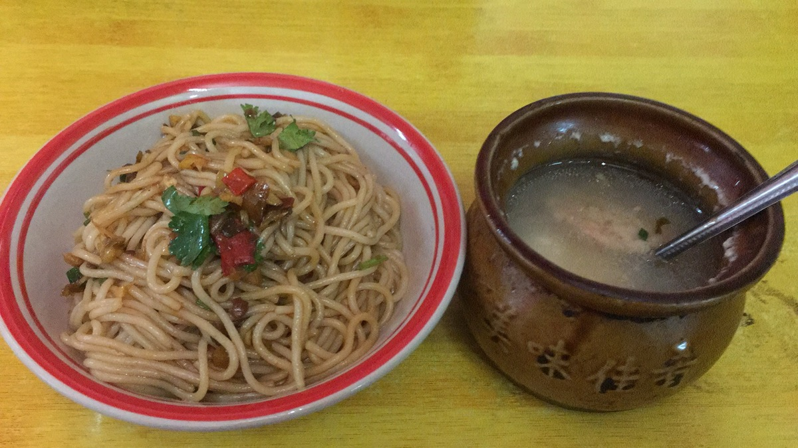
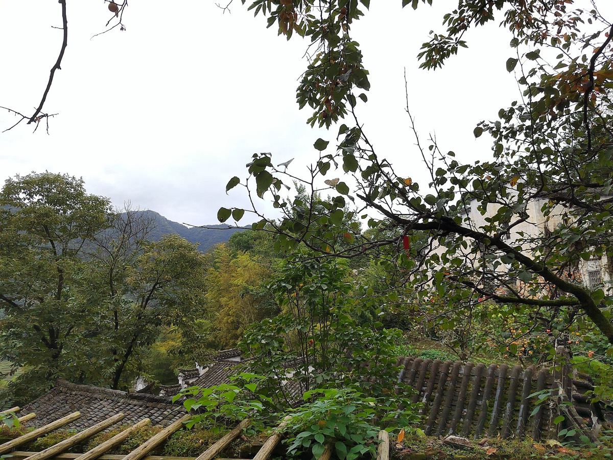

美食
拌粉、瓦罐汤、南昌炒粉、白糖糕、藜蒿炒腊肉、庐山石鱼石耳，赣菜鲜辣下饭，物价便宜。

南昌 + 庐山 · 5 天 4 晚
淄博出发 · 两人 · 10.2—10.6 · 美食 + 山水古迹，每天核心项目不超过 3 个
亮点速览

拌粉、瓦罐汤、南昌炒粉、白糖糕、藜蒿炒腊肉、庐山石鱼石耳，赣菜鲜辣下饭，物价便宜。

滕王阁「落霞与孤鹜齐飞」、海昏侯国遗址博物馆金器堆成山、八一起义纪念馆、庐山老别墅群。

庐山含鄱口云海日出、三叠泉瀑布、如琴湖与锦绣谷，十一山上凉爽，正是避暑尾声看秋色的好时候。
大交通
行程速览
| 日期 | 上午 | 下午 | 晚上 |
|---|---|---|---|
| D1（10/2） | 淄博→南昌高铁 | （车上） | 万寿宫街区晚餐、滕王阁夜景 |
| D2（10/3） | 海昏侯国遗址博物馆 | 滕王阁登楼 | 赣江边、秋水广场 |
| D3（10/4） | 南昌→庐山、上牯岭 | 如琴湖+花径+锦绣谷 | 牯岭街晚餐 |
| D4（10/5） | 含鄱口→三叠泉 | 美庐+老别墅群 | 牯岭夜市 |
| D5（10/6） | 下山赴南昌西/九江站 | 返程淄博 | — |
每日详细安排

住宿
美食清单


必吃：拌粉、瓦罐汤、南昌炒粉、白糖糕、藜蒿炒腊肉、米粉蒸肉、煌上煌酱鸭；庐山：石鱼爆蛋、石耳炖鸡、云雾茶。
找店：拌粉瓦罐汤是南昌人的早餐标配，居民区楼下小店往往最稳；赣菜偏鲜辣，不能吃辣点菜时说「微辣」。南昌物价便宜，两人一顿饭百元内能吃很好。
十一特别提示
海昏侯博物馆（实名预约）、滕王阁（约 50 元）、八一起义纪念馆（免费预约）、庐山门票（160 元）+ 观光车。均走官方微信/小程序，建议 9 月底前搞定；以官方最新公告为准。
弹性备选

10 月晒秋正当时，红辣椒黄玉米铺满晒架。想去就把 D3—D4 改成婺源，庐山留给下次。